Marked on the map · 6 pins
Nicole's own pins from the map list — each opens straight in Google Maps.
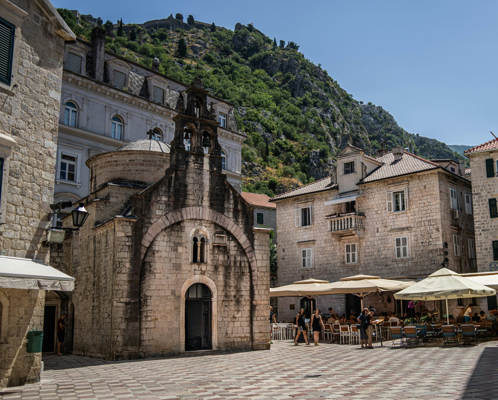
No. 06 · Days 6–8 · Montenegro's fjord-like bay · our longest stop
A Venetian walled town in a fold of dramatic mountains. Our mountain days come free here: no tours needed, just a bus, a taxi, and two feet. Nicole calls it "the Norway of the south".
The old town is small enough to absorb in a morning and pretty enough to walk twice: lanes, little squares, the cathedral, and the Kampana Tower standing guard at the water gate. Cafés spill out onto the stone, and the walls climb the mountain directly behind — you are inside a postcard with the light switch still on.
One scheduling fact runs everything here: cruise ships dock at Kotor and flood the old town roughly 8am–2pm. So the shape of a Kotor day writes itself — be up a mountain or out on the water while the crowds are in the lanes, and give the old town your late afternoon and evening, when it belongs to the town again.
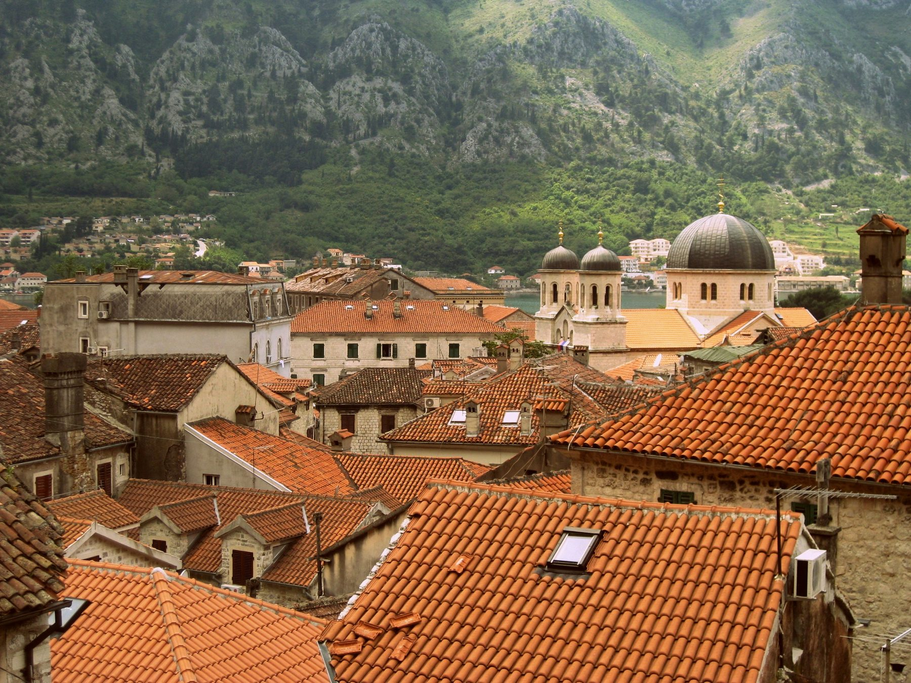
The best free mountain day of the trip is the Ladder of Kotor: the old trade road zigzagging up the fortress ridge. Bus or taxi to Krstac pass, then walk down the switchbacks — two to three hours, all of it downhill, all of it views. The switchbacks are not an obstacle; they are the point. Count them if you must, but 25 is the number people come home quoting.
The alternative is the city walls to the fortress — a shorter, steeper climb that ends on the castle ridge straight above town. Start early: there is no shade up there and the stone holds the afternoon heat like a griddle.
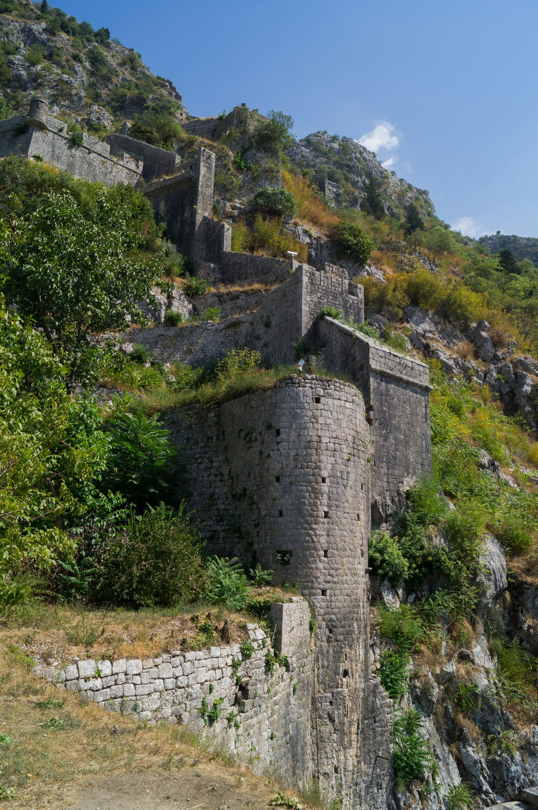
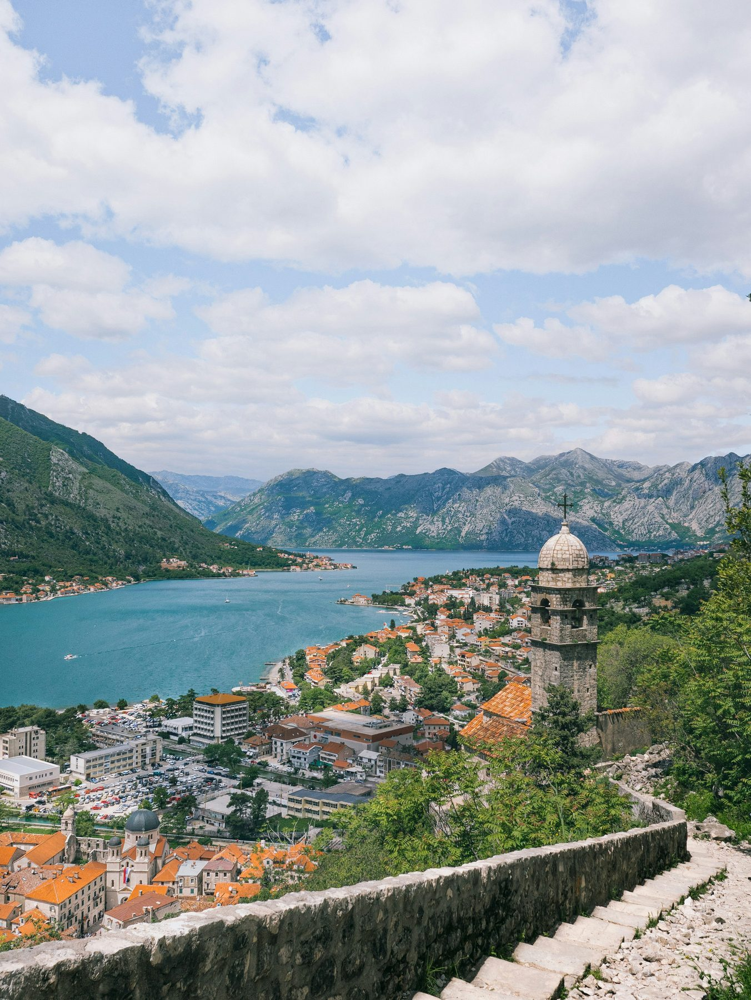
Thirty minutes up the bay, Perast is the softer version of the same stone: a waterfront strung with small palaces and one tall bell tower, and boats idling at the quay. From here a small boat runs out to Our Lady of the Rocks, an island church built on a pile of stones and ballast — a man-made island with a chapel on it, which is exactly as good an argument as it sounds for going.
Go before 10am: fewer boats, softer light, and the promenade still belongs to the village. Bring cash for the boat — no booking needed, usually.
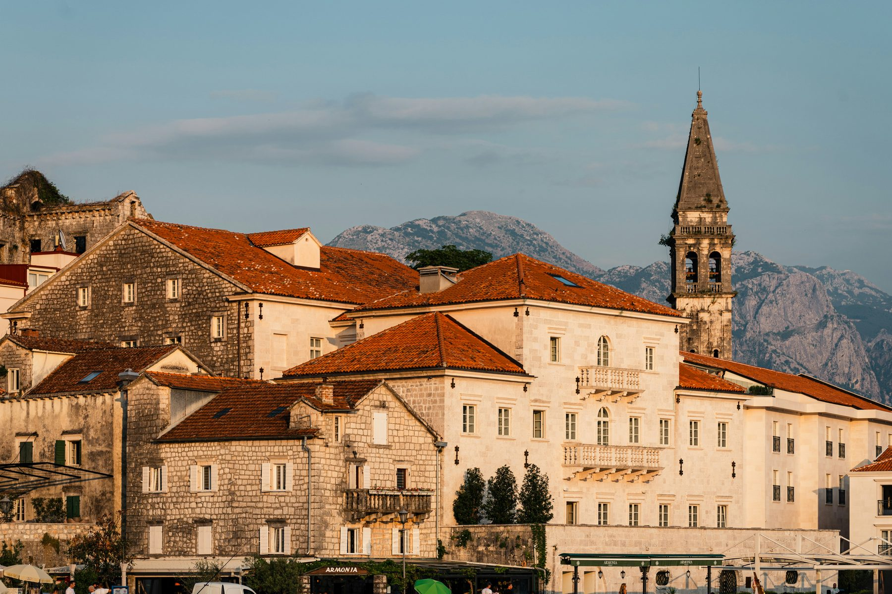
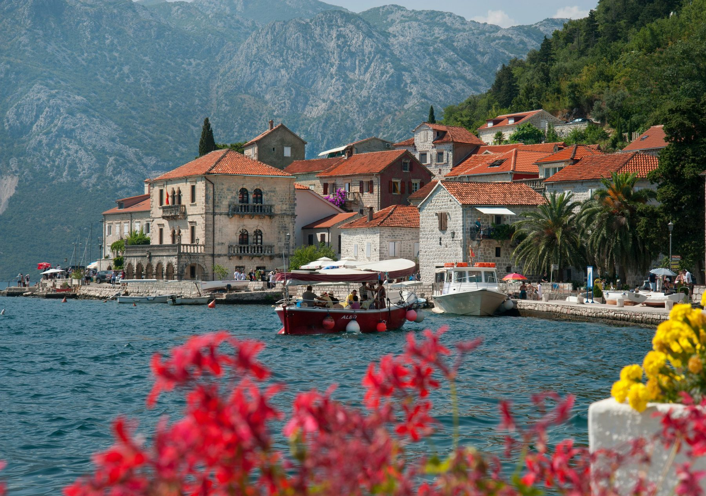
Seen from the water, Perast is one long arrangement: palaces in a line, the bell tower keeping count, and the mountains doing the backdrop. The boat out to the island gives you the view for free on the way.
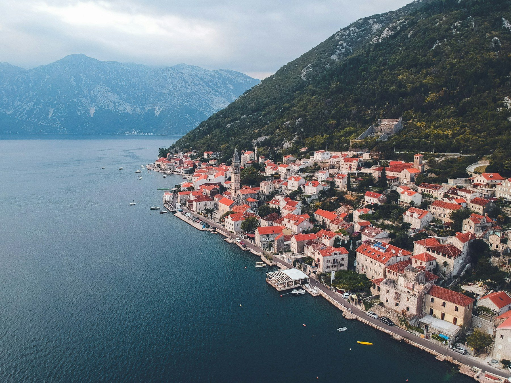
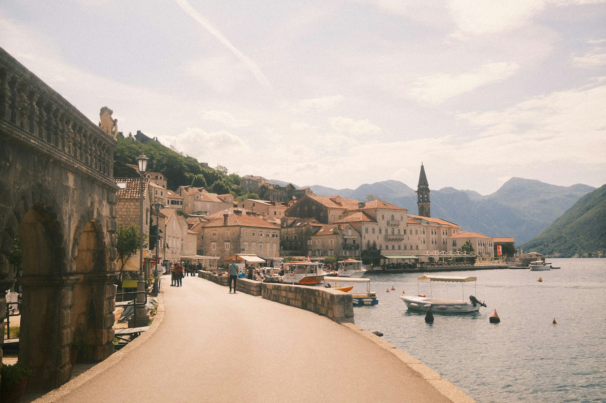
And out on the island itself: Our Lady of the Rocks — a church on a man-made islet, sitting alone in the water with cypresses for a fence. The boat from Perast drops you on the island for the church interior and the tiny museum, then brings you back.
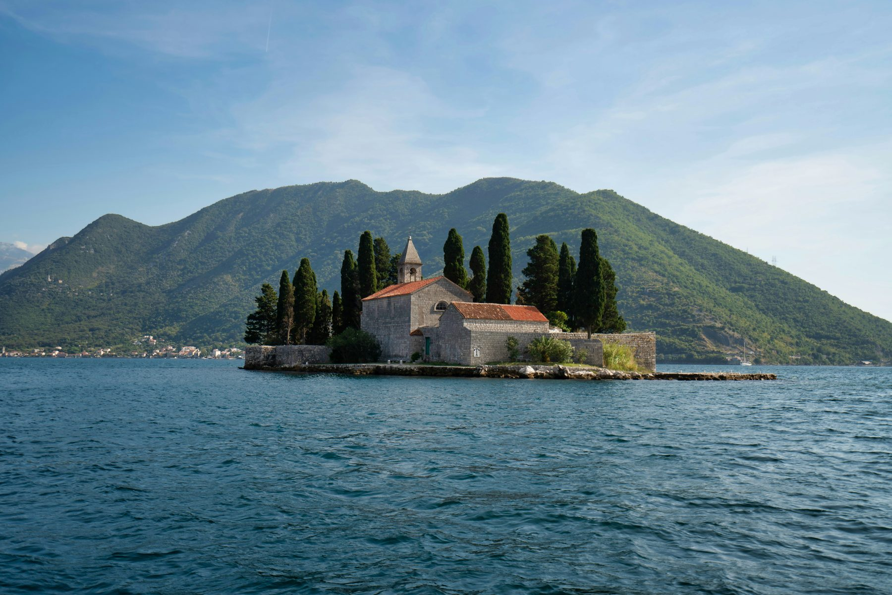
And when the promenade is done, the lanes go up: steep stone stairs, old lamps, bougainvillea doing the decoration for free.
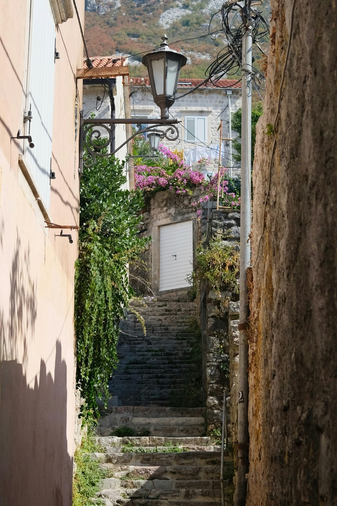
Half a day belongs to the bay itself: a boat trip from Kotor to the blue caves and the old submarine tunnels — a cold-war relic you float into, which beats most museums. Swim stops included; the water in late May is bracing rather than warm, which is a feature in this much sun.
Go before the cruise ships change the mood of the town (see above), or go late when the tour boats have gone home.
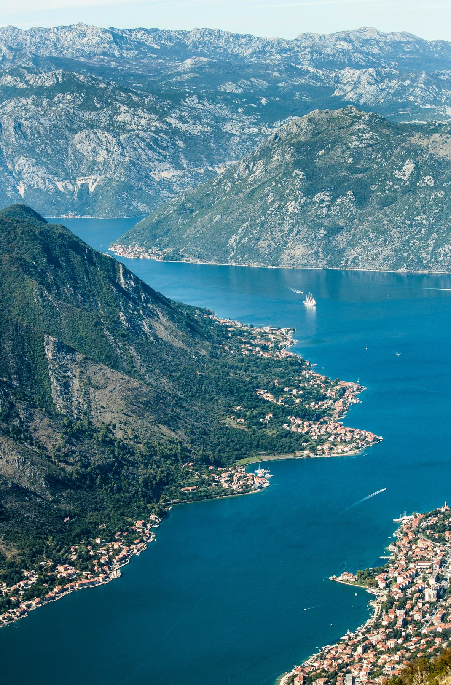
The wide view explains the fjord comparison better than we can: one narrow entrance, mountains pressing in on both sides, villages scattered along the shore like dropped buttons.
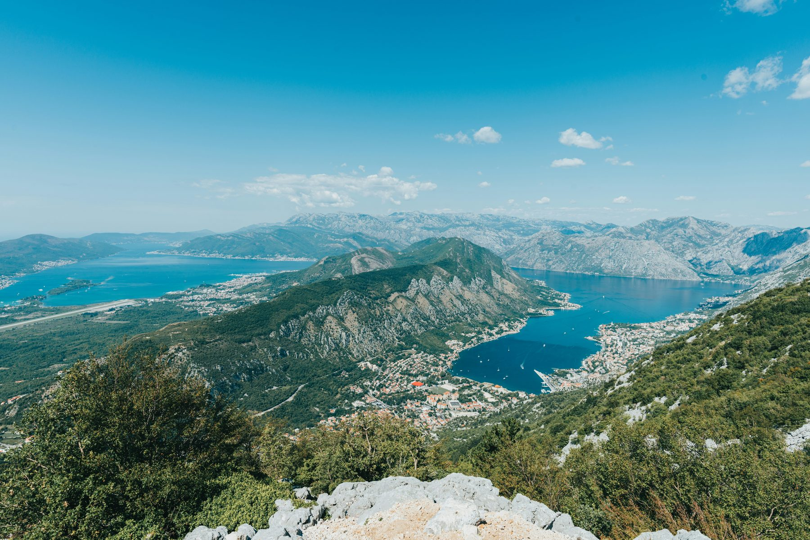
Three nights is the plan, and where to put them is still genuinely open. The honest options:
Working rule for when we book: if the trip turns swim-first and town-second, Herceg Novi is the stronger base; if the mountain days lead, stay Kotor-side. Decide against real accommodation listings, not against the map.
Field notes: currency is the euro — carry some cash for boats, buses and konobas. Kotor's bus station is a 10-minute walk from the old town. The border at Debeli Brijeg can queue badly in summer; build slack into the Dubrovnik leg. And do the Ladder on a cruise-ship morning — the lanes can wait.Field note · Balkans 2027
Marked on the map · 6 pins
Nicole's own pins from the map list — each opens straight in Google Maps.
| No. | Pin | Open |
|---|---|---|
| 1 | Kotor"Norway of the south. Explore the town streets by walking. Climb the ladder of Kotor." | Maps ↗ |
| 2 | Kotor Fortress"Walk to here (wall)" — the fort above town, reached on the walls. | Maps ↗ |
| 3 | Kampana TowerThe river-gate fortress tower at the old town's water entrance. | Maps ↗ |
| 4 | Top Of The Old Kotor Fort Trail"Walk up to here for stunning views." | Maps ↗ |
| 5 | Perast"Old fishing village. Stroll down the promenade. Relaxing town." | Maps ↗ |
| 6 | Bay of KotorThe bay itself — boat days, swim stops and viewpoints all around it. | Maps ↗ |